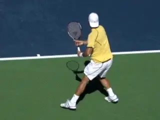
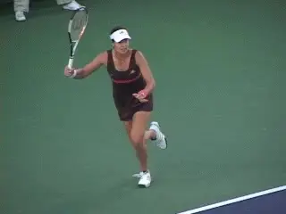
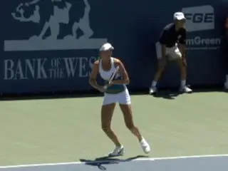
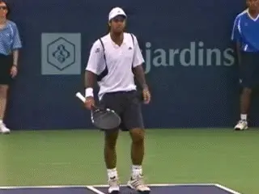
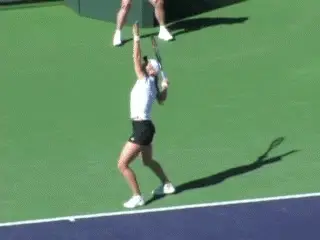
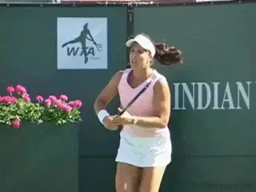
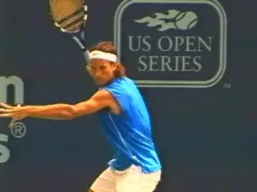
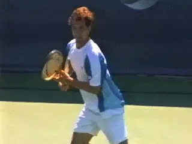

Overcoming Negative Emotions¶
Overcoming Negative Emotions¶
Jeff Greenwald¶

Is feeling negative on court just a part of who you are?
It's natural to assume that if you have feelings of low confidence, anxiety, or anger that you can't do anything about it. Many players feel that these negative emotions are simply an inherent part of their makeup. Despite players' desire to feel differently, they often come to believe that their negativity on the court is part of them and something that must be endured.
In the world of cognitive psychology, this is called emotional reasoning. We label ourselves based on our emotions. But actually this labeling is a fallacy, one that can have a huge negative impact on your tennis. The fact is this: Just because you feel a certain way, doesn't necessarily mean that this feeling is based on reality. Or, that these feelings have to be permanent.
Often, for example, low confidence, anger or anxiety, are actually the consequence of negative thinking. Negative thinking, which is frequently an unconscious process, is what leads to negative feelings. And negative thinking is something you can develop control over--something you can reverse. So it's possible that you could completely reverse the way you feel on the court during your matches. Does that prospect sound enticing?
A player I worked with played incredibly well in practice but lost all confidence in tournaments. Literally, she was two different players. The problem had been going on for three or four years when we met. She felt there was nothing that could help her, because the feelings of insecurity were so overwhelming in matches.

Can you overcome you inability to play your best in big matches?
My player was plagued with thoughts such as: \"Why can't I play well in big matches? Maybe I don't really have the potential to play well. I'm a horrible player under pressure and I always will be.\"
Eventually I was able to help her understand that this didn't have to be the case. I explained she had to become more aware of her automatic thoughts in her head, causing her to feel insecure, and that she could develop control over them. Helping her recognize that she could reverse her irrational thoughts paved the way for new emotions to emerge.
The first step in reversing negative thoughts is to recognize they exist, and identify specifically what they are for you. Because thoughts happen in our mind so quickly, sometimes we do not even notice what they are. We can become entrenched in negative emotions, caused by these unconscious negative thoughts, without understanding how this has happened.
The solution is to learn to observe and to monitor how you are actually talking to yourself inside your own head. When you do this you will be surprised to find how quickly these negative messages can create the uncomfortable feelings in your body. To fix this pattern, you need to stop taking your thoughts as true and begin to challenge them.

\"If I play my game, good things will happen.\"
The player I worked with in the above example started talking to himself in these ways: \"I know how well I can play. I deserve to win. If I play my game good things will happen.\"
On the court, you need to check in with yourself when you start to fell anxious or down about your game. Usually, if you pay attention, you will be able to notice that your mind has taken a turn down the negative track. \"I am so sick of practicing. I hope I play well today. I have not been feeling good on the court lately.\" The key is to get to know what you are saying to yourself.
Gradually you will develop the ability to catch yourself thinking negative thoughts, and see how the thoughts pair with a particular negative emotion that has descended upon you. This awareness allows you to let go of the thought and in many cases to actually dissolve the negative emotion. Then you can replace it with a specific, positive counter message.

What negative thoughts are associated with going negative on court?
Does it work? Recently my client went out and won a string of three-set matches, having faced multiple match points in many of them. She ended the season the number one player in her conference. Once she realized that she didn't have to be victimized by her feelings and that she had a choice over what she could think at any given moment, she stopped labeling herself as a player who had \"no confidence.\"
Next time you notice that you are feeling low on confidence, panicky, angry, or impatient ask yourself, What am I thinking right now? Identify the thought, or stream of thoughts. Then ask yourself if what you are thinking is really true. Ask yourself if there might be another perspective. What is the positive counter statement to the negative phrases you've uncovered? Make sure that you buy into the counter statement at least partially or it will feel fake to you.
Fear of Winning
Let's look at some more examples of the relationship between thoughts and feelings, and focus on a surprisingly common problem, the fear of success.

**Click on photo to hear Jeff Greenwald talk about playing in the spotlight.**
With so many players worrying about whether they will lose, it might seem preposterous to you that some people are actually frightened to win. But it's a problem that affects talented and successful players.
One highly successful male college player recently shared with me his fear of being in the spotlight and raising people's expectations. To play better in front of crowds and win more, he had to find a way to get more comfortable with winning.
This player had endured a great deal of pressure and expectation from others to achieve early on in his junior career. But this pressure was coupled with another strong message, \"It's important to be humble and not bring too much attention to yourself.\"
This conflicting external demand created obvious internal emotional conflict. He felt overwhelmed and self-conscious when he competed. Eventually the effect was so great that he found himself paralyzed in big matches.
Over time, you will see a tangible impact from positive belief.
If he lost, he would feel deflated and guilty that he had disappointed his teammates. If he won, the bar would be raised and he would feel pressure to keep winning. But he was not able to truly enjoy victory without appearing to have lost his \"humility.\" This no-win mind-set was not a recipe for his best tennis.
Over a number of weeks, this player began to see the impact his beliefs were having on him. He started to separate old beliefs that were handed down from family members from beliefs that were really his own. He replaced conflicting negative thoughts with his own version of who he was.
He became less ambivalent about winning and losing and focused on playing for himself. He began to give himself permission to compete, have fun, and win.
Another player I worked with had a similar difficulty with the idea of winning. When he was beating a higher ranked player and in a position to win, he would be bombarded by thoughts like, \"I'm not supposed to be in this position; I don't deserve to win.\"
 |
| Click here to hear Jeff talk about the choices we have regarding our thought patterns. |
This player was highly sensitive to the opinions of others. He feared being told that he was \"lucky.\" He was also very uncomfortable being in the spotlight. With prompting, he began to shift the negative view he had of himself and raised his self-image as a player. He, too, learned to give himself permission to win.
If you find yourself holding back in matches because you worry that expectations will rise or that you don't deserve to be in a winning position, remind yourself that you have earned the right to be there. There is a reason why you have gotten this far, and you deserve to finish it off. It is your right and obligation to yourself to play your best, and whatever happens is meant to be.
Other Variations
A fifteen-year-old nationally ranked player told me, \"It would be so embarrassing if I lose to that girl. What will people think?\" A forty-five-year-old nationally ranked player confided in me, \"I just felt like everyone was staring at me. I was nervous to just be on the court with some of the other higher-ranked players.\"
A current world-ranked player on the ATP Tour shared with me how self-conscious he gets when playing in front of crowds because of his fear of double-faulting.

Double faults on the world stage.
If you want to experience more freedom on the court, it is imperative that you recognize how your self-worth has gotten wrapped up in your performance results. You have to learn how to separate one from the other. Again, players are subject to negative thoughts about who they are as people that effect how they feel about themselves on the court.
In an interview in Inside Tennis, prior to her comeback in the second half of her career, Jennifer Capriati admitted that the inability to separate her self-worth from tennis was a big part of her downfall as a player.
\"I wanted to reach my true potential,\" she said, \"but I wasn't doing that. I had a lot of other stuff going on, like the fear.....At one point, I was even afraid of playing in front of a crowd again. It seemed so intimidating to have people watching.\"
\"A lot of it's about self-esteem. But now I've learned to differentiate how I feel about myself and what I'm doing on the court. For a long time, I didn't know how to do that.\" Once Capriati realized how her self-worth was directly attached to her experience on the court, she started to play the best tennis of her life.

How much is your self-image attached to outcomes on court?
This can be tricky, of course, because whenever we put energy into something and care about the results, our sense of self-worth can get wrapped up in it pretty quickly. The key is in recognizing that your results in tennis will provide you with some transitory satisfaction, but the real joy is in competing and playing the way you believe you can.
The fact is that you need to take stock of your reaction when you lose. Is it extremely difficult to let go and move on? It's helpful to begin observing the kinds of thoughts you are truly having. How upset do you get? Are you beating yourself up and concluding that you are inferior in some way as a person that goes beyond the match?
Do you feel shame for losing and stew over what others might be thinking of you? If so, you are probably overly attaching your self-esteem to your tennis performance.

Breaking free of expectations is critical to play your best.
I can speak about these issues myself, because I was far too attached to my results early in my career. Once I caught this tiger by the tail, I started to develop a wider perspective of the game, and on myself. Instead of viewing each loss as a life sentence, I began to see my tennis career and performance as a process of learning and self-discovery. Though I still wanted to win as badly as ever, my energy began to shift. I started feeling free, released from the handcuffs I had placed on myself when I was living in a world of comparison and anxiety.
It's important to recognize that the only real goal you need to have is learning about yourself, giving your best effort every time you play, and figuring out what factors help you play your best tennis. You need to see that the real joy is about breaking free from the chains you've placed on yourself.
One of the nicest aspects of tennis is that it teaches you a lot about your values and sense of character. You can't hide from yourself for very long in this game. Whatever personal conflicts are real in your life will sooner or later manifest on the court.
You do not gain more worth as a person or player whether you win or lose. You may think you do, but you don't. I hate to break the news to you, but you might be surprised if you really knew how little other people are really thinking about you, much less cherishing your latest win or lamenting your recent loss.

Tape into your fighting spirit brings true satisfaction.
Remind yourself that this tennis is only a game. It is an opportunity to test yourself and improve. It's worth the effort. But the outcome is not a reflection of who you are. You are more than your ranking or a good backhand. Don't diminish yourself to a ranking or a level in the game.
Tennis can be the greatest teacher you have in life in this respect. I suggest that you base your self-worth on your ability to adjust and improve, the effort you put in, and your ability to dig down when the going gets tough. Tapping into your fighting spirit and loving the battle brings true satisfaction. It's important to play with passion and react in a way that you feel good about. Give yourself permission to hit out on your shots and shine in front of others. Give yourself permission to win, but don't expect it or count on it.
And you know what? When you put your self-respect and your commitment to playing the way you really want play first and foremost, you will play better anyway.
It may seem like a cliche but if you can commit in your heart to the process of playing your best tennis, if you are willing to let go of the negative thoughts others put on you, and those you put on yourself, you are likely to have the greatest results of your life. You just have to have the courage to let the chips fall where they may.

The Best Tennis of Your Life
Learn how to play with freedom and win more matches! In his new book Jeff Greenwald, an elite international seniors player, coach, and psychotherapist, outlines 50 specific mental strategies to play the best tennis of your life. See how to embrace pressure, maintain confidence, and increase your focus and intensity. Jim Loehr calls Jeff's book: \"a real contribution to the field of applied sports psychology.\"\ \ to Order!

Jeff Greenwald, M.A., MFT is a nationally recognized sport psychology consultant. Jeff has worked as a consultant for the United States Tennis Association and trains numerous players around the world on the mental game. As a player in the men's 35 and over age division he attained an ITF #1 world ranking, as well as the #1 ranking in men's singles and doubles in the United States.
Greenwald is the author of \"The Best Tennis of Your Life\" published by Betterway. to order. Jeff has a private practice based in San Francisco and Marin County, California. He can be reached at 415-640-6928 or by email at jeff@mentaledge.net. You can also visit Jeff's website at www.mentaledge.net.